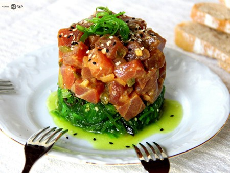

"Tartar de atún"
Refrescante y exquisito, nuestro tartar de atún está marinado en salsa de soja y aceite de sésamo, servido con aguacate y crujientes nachos. Perfecto como entrada.
Calorías: 220 por porción (6 piezas)
Precio: $75.00

Cantidad a pedir:
Por favor, verifique tus datos antes de enviar.